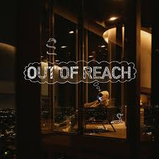
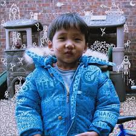
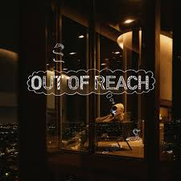
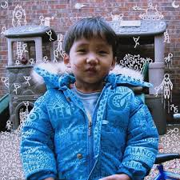

2023-presente
2023-presente: Lucid Dreams y revelación de rostro
Yang lanzó su obra extendida Antisocial el 24 de febrero de 2023. Contiene tres canciones, incluido el sencillo "Rockstar", que se lanzó el 10 de febrero, así como dos canciones que habían sido objeto de burlas anteriormente en su TikTok, "IDTWCBF (Friends) " y "En picada". El 7 de abril de 2023, BoyWithUke lanzó otro sencillo, "Out of Reach", que es la versión completa de una de sus canciones de un minuto en TikTok. También debutó con el sencillo en un concierto de Roblox que también contó con "Toxic" e "IDGAF". [dieciséis]
BoyWithUke lanzó posteriormente "Trauma" como sencillo el 3 de agosto de 2023. [17]
El cuarto álbum de BoyWithUke, Lucid Dreams , fue lanzado el 6 de octubre de 2023. Fue precedido por los sencillos "Rockstar", "Trauma" y "Migraine", y "Problematic" se lanzó como sencillo el día del lanzamiento del álbum. BoyWithUke ha afirmado que Lucid Dreams será el último álbum de la saga "Dreams". [ cita necesaria ]
BoyWithUke reveló su rostro por primera vez el 9 de octubre de 2023, al final de su vídeo musical de "Homesick". [18] En una publicación de Instagram, al día siguiente, reveló su rostro y nombre. [1] En la misma publicación, descubrió que la máscara le daba confianza en el pasado, pero ahora estaba afectando negativamente su salud física y mental. BoyWithUke también expresó sus planes de comenzar un nuevo capítulo de su música sin máscara. [19]
 



Antisocial out of reach Lucid dreams